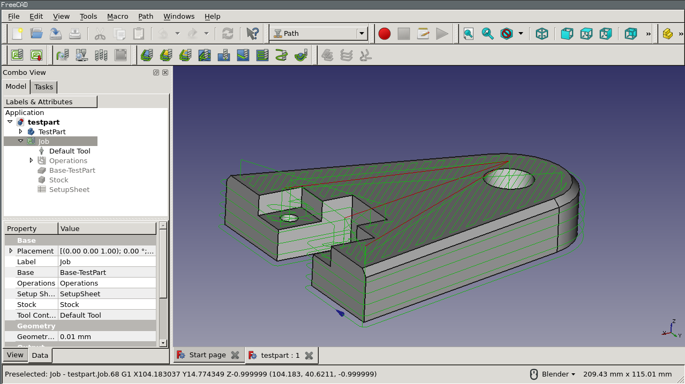
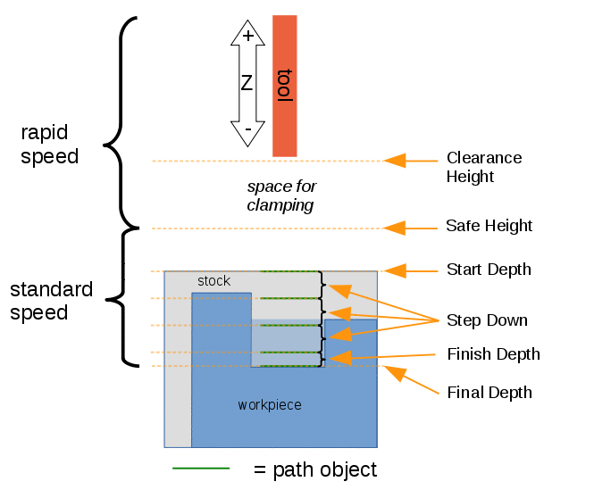
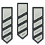
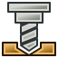

CAM Workbench

Introduction
L’ atelier CAM est utilisé pour produire les instructions machine pour les machines à commande numérique (CNC) à partir d’un modèle 3D FreeCAD. Celui-ci produit des objets 3D réels sur des machines CNC telles que des fraiseuses, des tours, des découpeuses laser ou similaires. Généralement, les instructions sont en langage G-code. Un exemple général de simulation de séquence de parcours d’outils CNC est présenté ici.
atelier CAM est utilisé pour produire les instructions machine pour les machines à commande numérique (CNC) à partir d’un modèle 3D FreeCAD. Celui-ci produit des objets 3D réels sur des machines CNC telles que des fraiseuses, des tours, des découpeuses laser ou similaires. Généralement, les instructions sont en langage G-code. Un exemple général de simulation de séquence de parcours d’outils CNC est présenté ici.

Le flux de travail de l’atelier CAM de FreeCAD crée ces instructions machine comme suit :
-
Un modèle 3D est l’objet de base, généralement créé à l’aide d’un ou plusieurs des ateliers
 PartDesign,
PartDesign,  Part ou Draft.
Part ou Draft. -
Une CAM Tâche est créée dans l’atelier CAM. Celle-ci contient toutes les informations nécessaires pour générer le G-code nécessaire pour traiter l’usinage sur une fraiseuse CNC : il y a le brut de matière (ou stock), le gestionnaire d’outils et elle suit certaines commandes contrôlant la vitesse et les mouvements (généralement en G-code).
-
Les CAM Outils sont sélectionnés comme requis par les opérations d’usinage.
-
Les parcours de l’outil de fraisage sont créés en utilisant par ex. des opérations de Profilage et Évidement 3D. Ces objets CAM utilisent le langage G-code interne à FreeCAD, indépendant de la machine CNC.
-
Le travail est exporté en G-code, correspondant à votre machine. Cette étape s’appelle post-traitement. Il y a différents post-processeurs disponibles.
Concepts généraux
L’atelier CAM génère un G-Code définissant les parcours pour usiner le projet représenté par le modèle 3D sur la fraiseuse cible au format G-code interne de FreeCAD, qui est ensuite traduit dans le langage approprié pour le contrôleur CNC cible en sélectionnant le post-processeur approprié.
Le G-code est généré à partir des directives et des opérations contenues dans une tâche de CAM. Le flux des tâches les répertorie dans l’ordre desquelles elles seront exécutées. La liste est complétée en ajoutant des opérations, des habillages des parcours, des commandes supplémentaires et des modifications à partir du menu CAM ou par les boutons de l’interface graphique.
L’atelier CAM fournit un gestionnaire d’outils (bibliothèque, table d’outils), un outil d’inspection du G-code et de simulation. Il relie le post-processeur et permet d’importer et d’exporter des modèles de tâches.
L’atelier CAM possède des dépendances externes, notamment :
-
Les unités du modèle 3D FreeCAD sont définies dans les paramètres . La configuration du post-processeur définit les unités G-code finales.
-
Le chemin d’accès du fichier des macro et des tolérances géométriques sont définis dans l’onglet .
-
Les couleurs sont définies dans l’onglet .
-
Les paramètres des éléments de maintien sont définis dans l’onglet .
-
Pour que la qualité du modèle 3D de base respecte les exigences de l’atelier CAM, utilisez Vérifier la géométrie.
Limitations
Voici quelques limites actuelles dont vous devez tenir compte :
-
La plupart des outils de CAM ne sont pas de véritables outils 3D, mais ne prennent en charge que la 2.5D. Cela signifie qu’ils utilisent une forme 2D fixe et peuvent la découper jusqu’à une profondeur donnée. Cependant, deux outils permettent de générer de véritables parcours 3D : Évidement 3D et
 Surfaçage 3D.
Surfaçage 3D. -
La plupart des fonctions de l’atelier CAM sont conçues pour une fraiseuse/routeur CNC simple et standard à 3 axes (XYZ), mais les outils de tournage sont pris en charge via le module complémentaire Tournage.
-
La plupart des opérations de l’atelier CAM renvoient des parcours basées uniquement sur une fraise standard, quel que soit le type attribué de fraise dans un contrôleur d’outils donné. introduced in 26.3 : les opérations
 Gravure et Surfaçage 3D et d’autres prennent désormais en charge la reconnaissance de la forme de l’outil.
Gravure et Surfaçage 3D et d’autres prennent désormais en charge la reconnaissance de la forme de l’outil. -
Les opérations de l’atelier CAM ne tiennent pas compte des mécanismes de serrage utilisés pour fixer le modèle à votre machine. Par conséquent, vérifiez et simulez les parcours que vous générez avant d’envoyer le code à votre machine. Si nécessaire, modélisez vos mécanismes de serrage dans FreeCAD afin de mieux inspecter les parcours générées. Recherchez les collisions possibles avec les brides ou d’autres obstacles le long des parcours.
Unités
La gestion des unités dans CAM peut prêter à confusion. Il y a plusieurs points à comprendre :
-
Les unités de base FreeCAD pour la longueur et le temps sont respectivement « mm » et « s ». La vélocité est donc « mm/s ». C’est ce que FreeCAD stocke en interne indépendamment de toute autre chose
-
Le système d’unités par défaut utilise les unités par défaut. Si vous utilisez le système d’unités par défaut et que vous entrez un taux d’avance sans unité, il sera saisi sous la forme « mm/s ».
-
La plupart des machines à commande numérique attendent un débit d’alimentation sous forme de « mm/min » ou « in/min ». La plupart des post-processeurs convertissent automatiquement l’unité lors de la génération de gcode.
Systèmes :
-
Changer le système dans les préférences change l’unité par défaut pour les champs d’entrée. Si vous êtes un utilisateur de CAM et que vous préférez concevoir en métrique, il est fortement recommandé d’utiliser le système « Métrique, petites pièces & CNC (mm, mm/min) ». Si vous concevez en unités états-uniennes, Système impérial et Construction états-uniennes fonctionneront.
-
Changer votre système d’unités par défaut n’aura aucune incidence sur le résultat, mais vous aidera à éviter les erreurs de saisie.
Résultat :
-
C’est au post-processeur qu’il incombe de générer l’unité de mesure correcte dans la sortie, et cette opération n’est effectuée qu’à ce moment-là.
-
L’unité de sortie de la machine n’a aucun rapport avec le système d’unités que vous avez choisi.
-
Les post-processeurs produisent une sortie métrique (G21), une sortie impériale (G20) ou sont configurables.
-
Les post-processeurs configurables produisent par défaut une sortie métrique (G21).
-
Si vous souhaitez que votre post-processeur configurable produise du G-code impérial (G20), définissez l’argument correct dans la configuration de sortie de votre tâche (par exemple, inches pour linuxcnc). Ceci peut être stocké dans un modèle de tâche et défini comme modèle par défaut pour le rendre automatique pour tous les tâches futures.
CAM Inspection :
-
Si vous utilisez l’outil CAM Inspection pour inspecter le G-code, vous le verrez en "mm/s" car il n’est pas post-traité.
Hauteurs et profondeurs
De nombreuses commandes ont différentes hauteurs et profondeurs :

Référence visuelle pour les propriétés de profondeur (paramètres)
Commandes
Certaines commandes sont expérimentales et ne sont pas disponibles par défaut. Pour les activer, voir CAM Fonctions expérimentales.
Commandes du projet
-
Tâche : crée une nouvelle tâche CNC.
-
 Chercher des erreurs : vérifie les valeurs manquantes dans la tâche sélectionnée.
Chercher des erreurs : vérifie les valeurs manquantes dans la tâche sélectionnée. -
 Post-traitement : exporte un projet en G-code.
Post-traitement : exporte un projet en G-code. -
 Post-traitement sélectionné : à faire. introduced in 26.3
Post-traitement sélectionné : à faire. introduced in 26.3 -
 Exporter un modèle : exporte la tâche en cours en tant que modèle.
Exporter un modèle : exporte la tâche en cours en tant que modèle.
Commandes d’outils
-
 Simulateur GL de parcours : active le nouveau simulateur amélioré de CAM. introduced in 1.0
Simulateur GL de parcours : active le nouveau simulateur amélioré de CAM. introduced in 1.0 -
 Simulateur de parcours : montre l’opération d’usinage comme le ferait la machine.
Simulateur de parcours : montre l’opération d’usinage comme le ferait la machine. -
Inspecter des commandes : affiche le G-code pour vérification.
-
 Sélectionner une boucle : permet de sélectionner une boucle d’arêtes.
Sélectionner une boucle : permet de sélectionner une boucle d’arêtes. -
 Activer une opération : utilisé pour activer ou désactiver une opération d’usinage.
Activer une opération : utilisé pour activer ou désactiver une opération d’usinage. -

Gestionnaire des outils coupants : ouvre un éditeur pour gérer les bibliothèques des outils coupants. -
 Sélecteur d’outils coupants : ouvre la fenêtre de sélection des outils.
Sélecteur d’outils coupants : ouvre la fenêtre de sélection des outils.
Opérations de base
-
Profilage : crée une opération de profilage de l’ensemble du modèle ou à partir d’une ou plusieurs faces ou arêtes sélectionnées.
-
 Poche : crée une opération de poche à partir d’une ou de plusieurs poches sélectionnées.
Poche : crée une opération de poche à partir d’une ou de plusieurs poches sélectionnées. -
 Surfaçage : crée un parcours de surfaçage.
Surfaçage : crée un parcours de surfaçage. -
Parcours hélicoïdal : crée un parcours hélicoïdal.
-
 Adaptatif : crée une opération adaptative d’ébauchage et de contournage.
Adaptatif : crée une opération adaptative d’ébauchage et de contournage. -
 Rainure : crée une opération de rainurage à partir d’entités sélectionnées ou de points personnalisés.
Rainure : crée une opération de rainurage à partir d’entités sélectionnées ou de points personnalisés. -
 Perçage : effectue un cycle de perçage.
Perçage : effectue un cycle de perçage. -
 Fraisage de filets: crée une opération de fraisage de filets à partir des fonctions d’un objet de base.
Fraisage de filets: crée une opération de fraisage de filets à partir des fonctions d’un objet de base. -
Gravure : crée un parcours de gravure.
-
 Ebavurage : crée un parcours d’ébavurage.
Ebavurage : crée un parcours d’ébavurage. -
 Gravure en V : crée un parcours d’usinage en utilisant une forme d’outil en V.
Gravure en V : crée un parcours d’usinage en utilisant une forme d’outil en V.
Opérations 3D
-
 Évidement 3D : crée un parcours d’usinage pour une poche 3D.
Évidement 3D : crée un parcours d’usinage pour une poche 3D. -
Surfaçage 3D : crée un parcours d’usinage pour une surface 3D. Fonctions expérimentales.
-
 Contour par lignes de niveau : crée un tracé défini par lignes de niveau pour une surface 3D. Fonctions expérimentales.
Contour par lignes de niveau : crée un tracé défini par lignes de niveau pour une surface 3D. Fonctions expérimentales.
Finitions du parcours
-
 Réseau : à faire. introduced in 1.1
Réseau : à faire. introduced in 1.1 -
 Assigner un axe: assigne un axe par un autre.
Assigner un axe: assigne un axe par un autre. -
 Limitation d’une zone : ajoute une limite à un parcours d’usinage sélectionné.
Limitation d’une zone : ajoute une limite à un parcours d’usinage sélectionné. -
 Dégagement des angles : ajoute une finition pour l’usinage des coins à un parcours d’usinage sélectionné.
Dégagement des angles : ajoute une finition pour l’usinage des coins à un parcours d’usinage sélectionné. -
 Lame rotative : ajoute une finition pour lame rotative à un parcours d’usinage sélectionné.
Lame rotative : ajoute une finition pour lame rotative à un parcours d’usinage sélectionné. -
 Entrée/sortie : ajoute un point d’entrée et/ou de sortie à un parcours d’usinage sélectionné.
Entrée/sortie : ajoute un point d’entrée et/ou de sortie à un parcours d’usinage sélectionné. -
 Symétrie : à faire. introduced in 26.3
Symétrie : à faire. introduced in 26.3 -
 Rampe d’entrée : ajoute une finition de rampe d’entrée d’usinage à un parcours d’usinage sélectionné.
Rampe d’entrée : ajoute une finition de rampe d’entrée d’usinage à un parcours d’usinage sélectionné. -
 Attache : ajoute une modification à la finition de l’attache de maintien d’un parcours sélectionné.
Attache : ajoute une modification à la finition de l’attache de maintien d’un parcours sélectionné. -
 Correction en Z: corrige la profondeur en Z à l’aide d’une sonde.
Correction en Z: corrige la profondeur en Z à l’aide d’une sonde.
Commandes supplémentaires
-
 Commentaire : insère un commentaire dans le G-code d’un parcours d’outil.
Commentaire : insère un commentaire dans le G-code d’un parcours d’outil. -
 Arrêter : insère un arrêt complet de la machine.
Arrêter : insère un arrêt complet de la machine. -
 Personnaliser : insère un G-code personnalisé.
Personnaliser : insère un G-code personnalisé. -
 Sonde : crée une grille de sondage à partir d’un brut.
Sonde : crée une grille de sondage à partir d’un brut. -
 Parcours à partir de formes : crée un objet parcours d’usinage à partir d’un objet Part sélectionné. Fonctions expérimentales. introduced in 0.19
Parcours à partir de formes : crée un objet parcours d’usinage à partir d’un objet Part sélectionné. Fonctions expérimentales. introduced in 0.19
Modifications du parcours
-
 Copie opération : crée une copie paramétrique d’un objet parcours sélectionné.
Copie opération : crée une copie paramétrique d’un objet parcours sélectionné. -
 Réseau : crée une copie en réseau en dupliquant un parcours sélectionné.
Réseau : crée une copie en réseau en dupliquant un parcours sélectionné. -
 Copie simple : crée une copie non paramétrique d’un objet parcours sélectionné.
Copie simple : crée une copie non paramétrique d’un objet parcours sélectionné.
Divers
-
 Surface : crée une zone d’usinage à partir d’objets sélectionnés. Fonctions expérimentales.
Surface : crée une zone d’usinage à partir d’objets sélectionnés. Fonctions expérimentales. -
 Zone du plan de travail : crée une zone plane d’usinage. Fonctions expérimentales.
Zone du plan de travail : crée une zone plane d’usinage. Fonctions expérimentales.
Commandes obsolètes
-
Décaler l’origine : change la position de l’origine. Non disponible dans 1.1 and later.
-
 Surfaçage : crée un parcours de surfaçage. Non disponible dans la 26.3 and later.
Surfaçage : crée un parcours de surfaçage. Non disponible dans la 26.3 and later. -
 Taraudage : non disponible dans la 26.3 and later.
Taraudage : non disponible dans la 26.3 and later.
Architecture des outils coupants
Gestion des outils, des forets et de la bibliothèque d’outils. Basé sur l’architecture des outils coupants.
Autre
-
CAM FAQ : l’atelier CAM partage de nombreux concepts avec d’autres logiciels de FAO mais possède ses propres particularités. Si quelque chose ne va pas, c’est un bon point de départ.
-
CAM Feuille de configuration : vous pouvez utiliser une Feuille de configuration pour personnaliser la façon dont les diverses valeurs de propriété pour les opérations sont calculées.
-
CAM Personnaliser le post-processeur : si vous avez une machine spéciale qui ne peut pas utiliser l’un des post-processeurs disponibles, vous pouvez avoir besoin d’écrire votre propre post-processeur.
-
CAM Quatrième axe : fraisage expérimental sur quatre axes.
Préférences
-

Préférences… : préférences disponibles dans l’atelier CAM.
Script
Voir la page CAM Ecrire un script.
Tutoriels
-
Tutoriel CAM, pas à pas pour l’impatient : un tutoriel rapide pour se familiariser avec CAM.
Vidéos
-
FreeCAD Path : Custom paths with Python - Part 1 - 5 : une playlist avec une série de 5 vidéos en anglais par sliptonic. Cette série montre comment travailler avec l’atelier Path.
-
FreeCAD CAM Path Workbench : une playlist avec une série de 7 vidéos en anglais par CAD CAM Lessons.
-
FreeCAD CAM CNC : une playlist avec une série de 8 vidéos en anglais par CAD CAM Lessons.
-
Voir aussi la section Fabrication assistée par ordinateur (FAO) de la page wiki Tutoriels vidéo.
Feuille de route
-
CAM Plan de développement : lisez ceci si vous êtes un développeur et que vous souhaitez contribuer à CAM.